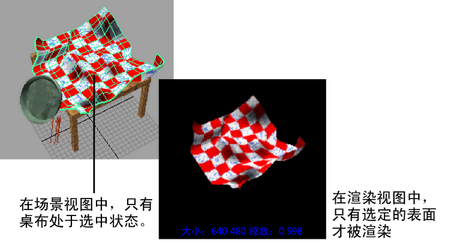

提示： 以 1:1 分辨率渲染可获得最快的反馈。
您可以隔离要渲染的特定对象. 请注意，使用 IPR 渲染时，必须先执行另一种 IPR 渲染，然后才能看到该更改的效果。
渲染选定曲面
- 选择要渲染的对象。
- 在“渲染视图”(Render View)窗口中，选择“渲染 > 仅渲染选定对象”(Render>Render Selected Objects Only)。
-
渲染场景。

提示： 可以显示场景的线框快照，用于指导您选择要渲染的场景区域。
在“渲染视图”(Render View)中，选择“渲染 > 快照”(Render > Snapshot)，然后选择要捕捉的摄影机（视图）。